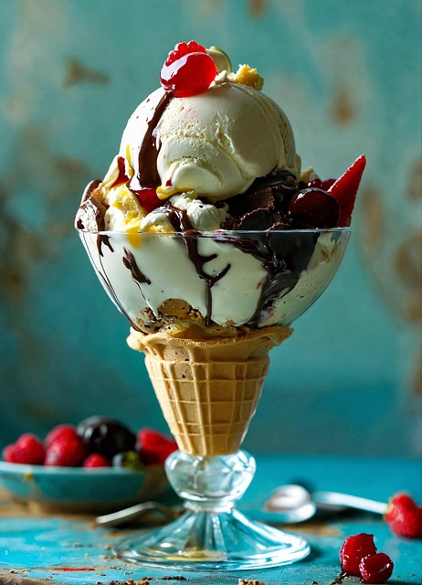

Gelado

Descrição
Uma sobremesa fresca e doce, perfeita para o verão!
Este gelado é fácil de preparar e pode ser feito com os sabores que mais gostas.
Ingredientes
- 2 chávenas de leite
- 1 chávena de açúcar
- 1 colher de essência de baunilha
- 1 chávena de natas
Passos
- Mistura todos os ingredientes.
- Coloca no congelador durante 3 horas.
- Mexe a mistura a cada 30 minutos.
- Serve bem frio!
Voltar ao Início